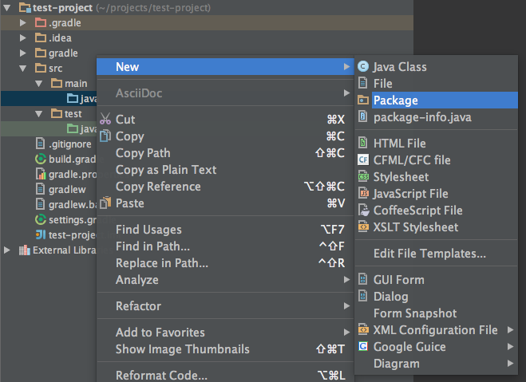
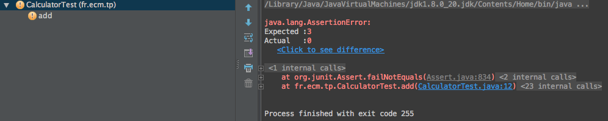

Le développement par les tests est une technique fondamentale de l’agilité
1. Le cycle de développement
1.1. La boucle d’ajout de fonctionnalité
Voici la boucle immuable du TDD
1.2. Avantages
C’est une pratique, au départ, contre intuitive. Elle a de multiple avantages :
-
On construit le design au fur et à mesure des tests
-
Les APIs résultantes plus claires et plus explicites
-
Le code est évidemment testé et on réduit le risque de régression
-
En cas de bug, il est plus facile de reproduire et corriger
2. jUnit
Kent Beck est à l’origine du TDD et des frameworks xUnit.
En java, jUnit est un framework permettant d’écrire des tests unitaires.
En version 4, un test s’écrit :
import org.junit.*;
import static org.junit.Assert.*;
import java.util.*;
public class ArrayListTest { (1)
private ArrayList list;
@Before
public void setUp() { (2)
list = new ArrayList();
}
@After
public void tearDown() { (3)
}
@Test
public void empty() { (4)
assertTrue(list.isEmpty());
}
@Test
public void add() { (4)
collection.add("itemA");
assertEquals(1, list.size());
}
}| 1 | le nom de la classe testée suffixée par Test |
| 2 | exécuté avant chaque test |
| 3 | exécuté après chaque test |
| 4 | 2 tests |
3. Un cas pratique
Nous allons coder un peu afin de voir ce que les tests peuvent apporter au développement.
3.1. Répertoires de source
⇰ Dans notre 'test-project' nous ajoutons les répertoires suivants :
test-project$ mkdir -p src/main/java src/test/java-
src/main/javava contenir nos sources java -
src/test/javava contenir nos tests java
3.2. package fr.ecm.test
⇰ Puis on ajoute le package fr.ecm.tp dans src/main/java

3.3. Calculator.java
On ajoute la classe Calculator dans le package fr.ecm.tp

package fr.ecm.tp;
public class Calculator {
public int add(int a, int b) {
return 0;
}
}Pour le moment, cette classe ne fait pas grand chose.
3.4. CalculatorTest.java
⇰ En faisant un alt+return sur le nom de la classe on peut facilement ajouter un test

On choisit Junit4

Le fichier CalculatorTest.java va automatiquement dans le package fr.ecm.tp de src/test/java
| il est possible de créer cette classe de test sans le raccourçi intellij, mais pourquoi perdre du temps ? |
3.5. Premier test
⇰ Nous rajoutons notre premier test
package fr.ecm.tp;
import org.junit.Test;
import static org.junit.Assert.*;
public class CalculatorTest {
private Calculator calculator = new Calculator();
@Test
public void add() { (1)
assertEquals(3, calculator.add(1, 2));
}
}| 1 | On teste la méthode add(int, int) |
⇰ On lance le test en faisant un alt+return (ou un click droit sur la classe)

Ce qui donne le résultat

3.6. Faire passer le test
⇰ Faites ce qu’il faut pour que le test passe.
Après cela, pour le moment, il n’y a pas grand chose à améliorer (no refactoring).
3.7. Test suivant
La soustraction n’est pas très intéressante (ce n’est qu’une addition déguisée).
⇰ Faire le test et puis le code pour la multiplication calculator.multiply(6, 4)
3.8. Division
La division présente un petit plus, que se passe t il si on fait un calcultator.divide(3, 0) ?
Le test est l’occation de prendre une décision sur le comportement de cette méthode divide.
Il y a plusieurs possibilités :
-
lancer une exception adaptée
-
faire un
assert -
retourner une valeur remarquable (-1 ?)
Dans notre cas, l’exception la plus adaptée est IllegalArgumentException
Le test de la condition aux limites peut s’écrire
@Test(expected = IllegalArgumentException.class)
public void divideByZero() {
calculator.divide(3, 0);
}⇰ Ecrire les tests divide et divideByZero et le code associé.

Le Test Driven Development (TDD) est une pratique simple et extraordinairement enrichissante.
Elle simplifie l’activité de coding et aide à produire du code plus simple.
Le TDD n’est pas une spécificité java, cela s’applique à tous les languages.
Test Driven Development: By Example explique les mécaniques du développement par les tests.